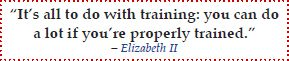

Absolutely! CLM is for every subject and everybody. The learning method is the same whether you’re learning history in high school, quantum physics in college, or the elements of a new job.
As you’ve seen so far, CLM does not involve speed-reading or gimmicks. It is based on sound principles of learning psychology and has been tested by real students at many colleges and universities.
All you have to do now is:
The few hours you spend learning CLM will lead you to life-long learning productivity. This is not only critical to college, but also to work and life in general.

Handpicked Web recommendations are available at
http://www.pearltrees.com/conciselearning.
Handpicked book recommendations are available at
http://conciselearning.com/studyskillsbooks.html.